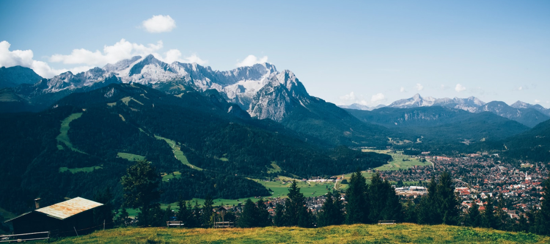

Чем заняться в Шерегеше летом
Последние годы в Шерегеше активно развивается летний туризм. В этой статье мы расскажем, чем можно заняться в Шерегеше, когда до лыжного сезона еще далеко.
Съездить на экскурсию
Советуем посмотреть достопримечательности Горной Шории — горно-таежной местности вокруг Шерегеша, на стыке Алтая и Саян. Самые популярные туры — по вершинам гор Чертов Палец и Сарлыки. У горы Чертов Палец необычная форма — в виде пальца, поднятого вверх. Маршрут до нее очень живописный, а с вершины открывается потрясающий вид на гору Мустаг. В этом году я решил, что можно совместить полезное с приятным: по пути к горе Чертов Палец пройти и по другому, не менее красивому маршруту, который я когда-то нашёл в Интернете.
Покататься на квадроциклах
Можно кататься самим или взять обзорную экскурсию с инструктором. Арендовать квадроцикл можно в гостинице «Зимняя». Самые популярные маршруты — поездка на вершину горы Сарлыки и экстремальный маршрут «Золотые прииски» по местам золотодобычи и таежным тропам с пересечением горных рек и ручьев. Стоимость 1 км — 1 000 руб. Если вы хотите арендовать квадроцикл на сутки, вам нужно будет заплатить от 6 000 до 8 000 рублей. В стоимость входит: аренда квадроцикла, сопровождение инструктора, страховка.